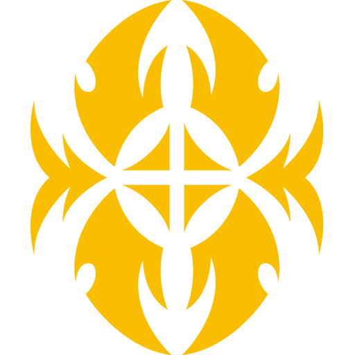

United Sanctuary

Royal Paladin "Play Style"
Royal's Paladin main goal is achieve overwhelming force. They use superior calling effects to quickly gather 5 rear-guards, and gain advantages and power from those rear-guards. The Altmile archetype has an added focus on calling Grade 2 rearguards, calling during the Battle Phase to do additional attacks, and using the Keyword "Brave" which unlocks powerful effects when the player has three or less cards in hand. The "Sanctuary Guard" archetype on the other hand power up their front row for each Grade 1 rear-guard they have.
How to Play
If using the "Brave" mechanic, when you start your turn, after having your desired board state,try have no cards in your hand to keep "Brave" in effect after doing your Drive Check. I know it sound crazy but with "Brave" you tend to get your cards back to hand or you draw extra cards at the end of the turn. Now if not, all other archetypes within the clan tend to do the same with calling units but for diferent reasons/goals.

Shadow Paladin "Play Style"
Shadow Paladin's goal is to sacrifice your own units for achieve abilities and such. It focus on calling rear-guards from the deck, but unlike Royal Paladin who gains power from rear-guards, Shadow Paladin retires their rear-guards for costs or effects. It uses superior calling and building hand advantage to recover from the losses of retiring many rear-guards. With the newly added "Luard" archetype, Shadow Paladin now focuses on calling grade 1 cards in contrast to Royal Paladin calling grade 2 cards, and also introduces rear-guards whose effects activate when retired for your costs. The keyword "Ritual" activates based on the number of grade 1 cards in your drop zone.
How to Play
With the "Luard" archetype, they focus on achieving "Ritual" to activate abilities which is to have at least 3 Grade 1 units in the Drop Zone to have "Ritual" active. They have phenomenal toolboxing skills to get what they need to perform explosive plays and finishers so it great to use that often.
With the "Revenger" archetype, they are focused with early game beatdown with their aces being "Revenger, Raging Form Dragon" and "Revenger, Phantom Blaster "Abyss" ". They focus on restanding by sacificing their allies for an explosive finisher.
With the "Witch" archetype, focus on replacing the opponent's rear-guards with grade 0 rear-guards to weaken their attack formation and mess with their strategies and also reduce the opponent's vanguard's power based on how many grade 0 rear-guards they have. This is very technical because on how to mess up your opponent's turn which make the absolute difference.

Gold Paladin "Play Style"
Originally, Gold Paladin's ability to superior call was restricted to one card from the top deck. Counting a few previous cards, this was further expanded upon in the Legion era, where the new effects allow the player to search the top three to five cards of their deck and chose one from among them to superior call. This ability later becomes the main playstyle of Gold Paladin in Cardfight!! Vanguard G, specifically with the Gurguit archetype, that also gives power to their units using the keyword "Unite". The clan can also superior call units from the deck into the guardian circle.
How to Play
With the "Gurguit" archetype, the only difference besides the rest of the clan is the fact this archetype can freely Superior Call units from the deck to the Guardian Circle to ease the pressure off the their hand size.
With the "Liberator" archetype, their effects can stack for each time you Superior Call units to the field. This tactic rewards you greatly for Superior Calling units to the board which entices you to keep using these abilities.